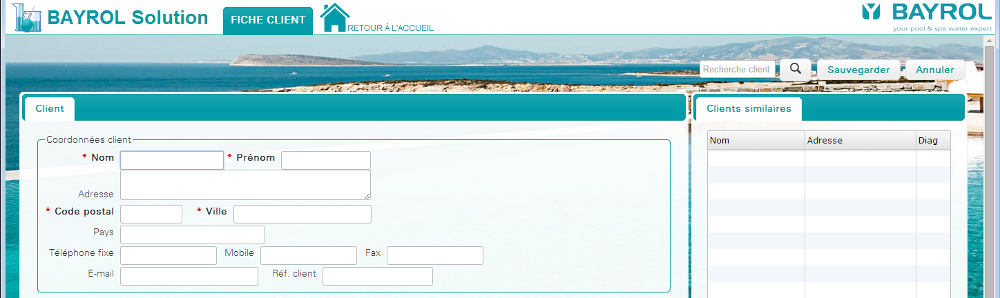
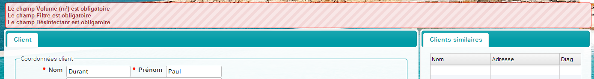
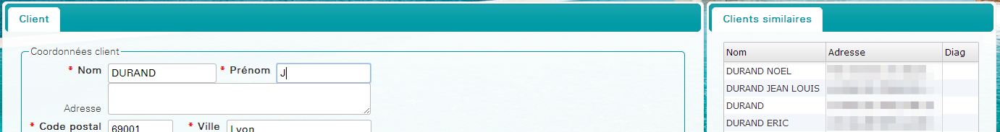
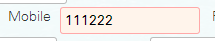
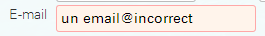
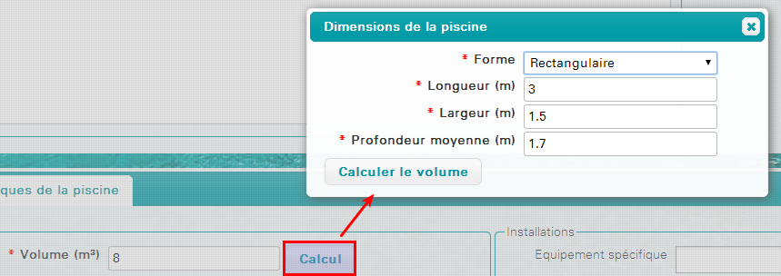
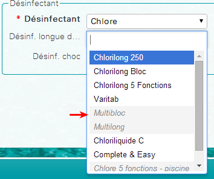

Depuis l'écran d'accueil, cliquer sur le bouton Fiche client ou depuis le menu Fichier > Fiche client
Remplir toutes les zones du formulaire.
Les zones obligatoires sont indiquées en gras et marquées d'une petite étoile rouge (*).
Lorsque le libellé du champ ne peut être affiché en totalité sur l'écran, on peut voir le libellé complet en passant la souris au dessus.
Cliquer sur le bouton « Sauvegarder » pour enregistrer la création. Si des champs obligatoires sont manquants le logiciel affiche un message d'erreur et affiche les champs en rouge.
Afin d'éviter de créer des clients en doublon, lors de la création du client, une liste de clients similaires est affichée sur la droite
Double cliquer sur une ligne du tableau pour charger ce client au lieu d'en créer un nouveau
Les champs téléphones interprètent les formats de numéros téléphoniques suivants :
Les espaces n'ont pas d'importance : 0102030405
Le numéro est restitué sous sa forme internationale (+33 1 02 03 04 05)
Par défaut les numéros sont considérés comme français sauf s'ils sont préfixés de l'indicatif d'un autre pays comme par exemple :
Si le format du numéro n'est pas reconnu, la zone est affiché en rouge toutefois la saisie n'est pas bloquée
Le champ e-mail contrôle la validité de l'e-mail saisi.
Si l'e-mail saisi est incorrect, le champs est affiché en rouge toutefois la saisie n'est pas bloquée.
Le volume de la piscine peut être saisi directement ou calculé en renseignant les mesures de la piscine.
Appuyer sur le bouton « Calcul » pour renseigner les mesures de la piscine
En fonction du volume et du filtre utilisé, les produits non éligibles peuvent plus être sélectionnés.
Si des produits avaient été précédemment sélectionnés et que le volume ou le filtre ont été modifiés ensuite, les produits non éligibles sont automatiquement retirés.
Le bouton « Annuler » permet d'annuler la saisie et de revenir à un formulaire vierge